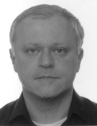

FULL papers: 20 + 10 minutes
NIER/TD papers: 10 + 10 minutes
Program: Sunday, Monday
The room assigned for VISSOFT is RGD 04 (both Sunday and Monday). This is located in the RGD building on campus, also known as “Centro Civico” (see the map).
| 09:15 - 09:30 | Opening | |||
| 09:30 - 10:30 | Keynote In Varietate Concordia: How Software Visualization and Information Visualization Have Evolved From, Around, and Along Each Other Alexandru C. Telea | |||
| 10:30 - 11:00 | Coffee Break | |||
| 11:00 - 12:30 | Session 1: Architecture, Distribution and Dependencies Session chair: Takashi Ishio | |||
| A Visualization for Client/Server Architecture Viewpoints and Architectural Violations Nour Jihene Agouf, Stéphane Ducasse, Anne Etien, Nicolas Anquetil and Soufyane Labsari | FULL | |||
| Visualizating Kubernetes Distributed Systems: an exploratory study Dennis Balreira, Thiago Araújo and Fábio Petrillo | FULL | |||
| Visually Analyzing Company-wide Software Service Dependencies: An Industrial Case Study Sebastian Baltes, Brian Pfitzmann, Thomas Kowark, Christoph Treude and Fabian Beck | NIER/TD | |||
| 12:30 - 14:00 | Lunch Break | |||
| 14:00 - 15:30 | Session 2: Maintenance, Comprehension & Process Session chair: Jesus M. Gonzalez-Barahona | |||
| Interactively exploring API changes and versioning consistency Souhaila Serbout, Diana Carolina Munoz Hurtado and Cesare Pautasso | FULL | |||
| Visualizing Source Code as Comics Using Generative AI David Heidrich and Andreas Schreiber | NIER/TD | |||
| µPrintGen: Supporting Workflow Logs Analysis Through Visual Microprint Sebastian Alfaro, Alexandre Bergel and Jocelyn Simmonds | NIER/TD | |||
| 15:30 -16:00 | Coffee Break | |||
| 16:00 - 17:30 | Open Tool Demos Session chair: Adrian Hoff | |||
| 17:45 - 19:45 | Joint Reception with IWSC and SCAM Location: Villa Paulina Student Volunteers will walk people to the venue. There will be about 9 amuse-bouche per person served plus beer, wine, and non-alcoholic drinks. | |||
| 20:00 - 22:00 | VISSOFT Banquet dinner Location: Origen Bistro Student Volunteers will walk people to the venue. | |||
| 09:30 - 10:30 | SCAM/VISSOFT Joint Keynote IDEs as the Bridge: Connecting Humans and Code Sandeep Kaur Kuttal | |||
| 10:30 - 11:00 | Coffee Break | |||
| 11:00 - 12:30 | Session 3: Supporting Development Session chair: Michele Lanza | |||
| Collaborative, Code-Proximal Dynamic Software Visualization within Code Editors Alexander Krause-Glau and Wilhelm Hasselbring | FULL | |||
| Problems in Microservice Development: Supporting Visualisation Oscar Manglaras, Alex Farkas, Peter Fule, Christoph Treude and Markus Wagner | FULL | |||
| What’s in a Name? Linear Temporal Logic Literally Represents Time Lines Runming Li, Keerthana Gurushankar, Marijn Heule and Kristin-Yvonne Rozier | FULL | |||
| 12:30 - 14:00 | Lunch Break | |||
| 14:00 - 15:30 | Session 4: VR, AR and eye-tracking Session chair: Nour Jihene Agouf | |||
| Understanding the NPM Dependencies Ecosystem of a Project Using Virtual Reality David Moreno-Lumbreras, Jesus M. Gonzalez-Barahona and Michele Lanza | FULL | |||
| DGT-AVisualizing Code Dependencies in AR Dussan Freire-Pozo, Kevin Cespedes-Arancibia, Leonel Merino, Alison Fernandez-Blanco, Andres Neyem and Juan Pablo Sandoval Alcocer | NIER/TD | |||
| iTrace-Visualize: Visualizing Eye-Tracking Data for Software Engineering Studies Joshua Behler, Gino Chiudioni, Alex Ely, Julia Pangonis, Bonita Sharif and Jonathan Maletic | NIER/TD | |||
| 15:30 - 16:00 | Coffee Break | |||
| 16:00 - 16:40 | MIP Talk (FULL) Performance evolution blueprint: Understanding the impact of software evolution on performance Juan Pablo Sandoval Alcocer, Alexandre Bergel, Stephane Ducasse, and Marcus Denker (NIER) Live Trace Visualization for Comprehending Large Software Landscapes: The ExplorViz Approach Florian Fittkau, Jan Waller, Christian Wulf, and Wilhelm Hasselbring |
|||
| 16:40 - 17:30 | Town Hall & Closing | |||
In Varietate Concordia: How Software Visualization and Information Visualization Have Evolved From, Around, and Along Each Other, Alexandru C. Telea
Abstract. Software visualization (softvis) and information visualization (infovis) have a long, interconnected, and complex joint history. Originally appearing as a subdomain of infovis which focuses on solving problems coming from the software engineering domain, softvis has grown in the last two decades to become a self-standing field with distinct challenges, key results, events, and community. In the same time, the independent growth of the two fields has made the transfer of ideas, techniques, methods, application cases, and researchers between the two domains increasingly challenges. In this talk, I will present a history of this highly dynamic process and argue about the need for raprochemment of infovis and softvis. This need is supported by two key aspects identified and further discussed: (1) Complementarity of the two fields advocates for more interaction, as shown by success stories from softvis which led to entirely novel branches of development into the infovis field and, conversely, recent key developments in infovis which offer strong potential to be picked up to address existing key challenges in softvis. (2) Commonality, in terms of both fields essentially aiming to solve very similar visualization problems that address very similar data and using related visualization pipelines, advocates on an increasingly joint approach in their further development.
Bio. Alexandru C. Telea received his PhD (2000) in Computer Science from the Eindhoven University of Technology, the Netherlands. He was assistant professor in visualization and computer graphics at the same university (until 2007) and then full professor of visualization at the University of Groningen. Since 2019 he is full professor of visual data analytics at Utrecht University. He chaired several ACM SoftVis and IEEE VISSOFT events and also the steering committee of both conferences, which eventually led to their fusion and the appearance of the IEEE Working Conference on Software Visualization. His research interests include high-dimensional visualization, scalable software visualization, image-based information visualization, and visual analytics for explainable AI (XAI).
Location and other information for VISSOFT
The room assigned for VISSOFT is RGD 04 (both Sunday and Monday). This is located in the RGD building on campus, also known as “Centro Civico”.
Below is a map you can use for better orientation, it has the RGD building marked as "Conference Venue” (marked in blue), as well as the location for the Sunday reception, which will be in Villa Paulina on campus (marked in yellow), and the location for the VISSOFT Banquet, at the Origen Bistro (marked in red).
The lunch is in building Santo Domingo (marked in yellow). We will have student volunteers guide people from one location to another, including from the reception to the VISSOFT banquet.
We will have buses taking people in the morning from the conference hotel area (marked in purple) to the conference. The bus will pick people up behind the Ibis Hotel and will leave at 8am on Sunday and Monday for going to the conference venue. We will have coffee available all day at the conference and the registration desk opens at 8am. Student volunteers and myself will be there in the morning to guide people to the buses.
We will also have buses taking people back to their hotels after the VISSOFT dinner, at 10:15pm on Sunday and at 5:45pm on Monday, after the last VISSOFT session ends.
Program announced!
2023/09/19
The full two day program is listed on the Program page. ...
Keynote Speaker Announced
2023/08/18
The keynote will be delivered by Prof. Alexandru C. Telea, see Program page. ...
Most Influential Paper Award Co-Chairs Announced
2023/08/17
The MIP paper award at VISSOFT 2023 will be co-chaired by Andreas Kerren and Andrian Marcus. ...
Accepted Papers Announced
2023/07/26
The list of accepted articles for Research and NIER/TD Tracks is now available on the Program page. ...
More News